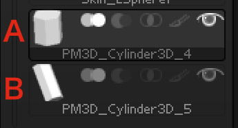
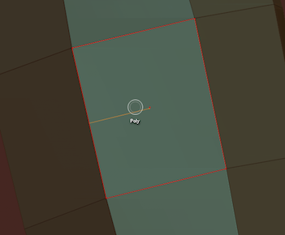

逆引きZBrush
概要
学んだ内容が溜まってきたので書く。
あいうえお順とかの並び替えは今後やる。
Version 4R7 P3 (64-bit) (473.64) Mac OS X
Editモードに入るには
Toolをどれか一つでもカンバスに置くとEditモードにできる。
置かないとできない。
左右対称の編集をするには
Xキー or Transform > Active Symmetry
カンバスにToolを置くには
Tool > CurrentTool(左上のやつ)に何が選ばれているか確認、

例えばポリゴン板を置きたければPlane3Dを選ぶ。

選んだ後にカンバス上をドラッグするとToolが置ける。
ここからEditモードに移行できる。
カンバスに表示された残像を消すには
Layer > Clearボタンで消せる

すべてのツールを表示、かつ今選んでいるツールだけを編集したい
Transform > Transp をオンにする
+
Transform > Ghost をオフにする。

これで、いろいろなツールを見ながら、選んだツールだけを編集可能になる。
アクティブなSubToolを切り替える
上下キーで切り替わる。
SubToolの一覧を表示する
nキーで、「現在ActiveなSubTool以外の一覧」が表示できる
複数のサブパレットを開きっぱなしにする
Preferences > Interface > Palletes > One Open SubPallete
設定を保存する
Reference > Config > StoreConfig
ZSphereをポリゴンに変える
1.Tool > Adaptive Skin > Make Adaptive Skin
2.この時点で作成されたスキンがQuickPickや3DMeshesの中に追加されている
3.Tool > SubTool > Insert で読み込んで使う
4.元になったZSphereは自動的に何か変わることはないので、消したりとか。
ZSphereの一部を消す
altキーを押しながらZSphereの中心をクリックする。
最初の一個のSphereは消えない。
LightBoxを消す
,キーで消える
ツールの色を変える
Color > FillObject で色を一括で変えられる。

ブラシサイズをズーム具合と連動させる
Draw Sizeの右上のDynamicマークをShift + クリックする。
これで、ズーム具合とブラシサイズが連動するようになる。
Maskモードで使用するブラシを変更する
controlキーを押したまま、ブラシパレットからブラシを切り替える。
現在アクティブなツールのみに影響を与える
Transparencyモードをオンにすると、現在アクティブなツール以外をクリックしても反応しなくなる。
マスクの範囲を細かく表示する
Tool > SubTool で筆のマークをクリックすると、マスクの範囲がグラデーションで表示されるようになる。

ハイポリモデルに滑らかな選択範囲をセットする
低Devideを選択してローポリ状態にし、選択範囲をセットしてから高Devide状態に戻すと、
境界範囲が滑らかになる。
マスク範囲を大きくしたい
Tool > Masking > BlurMask
マスクされた範囲に対して、影響範囲を広く浅くする
Tool > Masking > GrowMask
マスクされた範囲を拡大させる
マスク範囲を小さくしたい
Tool > Masking > ShrinkMask
マスクされた範囲を小さくする
ZSphereを一個ずつ動かす
ブラシサイズを1pxにするとかやると楽。
SubToolにZSphereを足す
Tool > SubTool > Append > ZSphere
ツールを合体させる
Tool > SubTool > Merge > MergeDown
まだ試してない
左右片方だけのパーツを左右対称に複製する
1.Tool > Geometry > Mirror And Weld のボタン上でどの軸に対象にコピーするか選択
2.ボタン押して実行
複数のツールを一つのツールに合体させる
1.混ぜたいツールをSubToolパレット上で上、下隣り合わせに並べて、
2.上のツールを選択した状態で
3.Tool > SubTool > Merge > Merge Down
ポリゴンのポイントを動かしたい
Move ブラシを使うと楽
ツールの上にペイントする
zadd, zsubをオフ
rgbをオン
この状態でモデルの上でstandardブラシを動かすと描画できる。
ツールの特定の部分を消す
いろいろな方法がある。
bool演算を使ってツールの特定の部分を消す
Modify Topologyを使ってツールの特定の部分を消す
Trim系のブラシを使ってツールの特定の部分を消す
Trim系のブラシを使ってツールの特定の部分を消す
(要チェック)
TrimRectとか。
Subdivision Freezeが必要。ぶっちゃけDel LowerしてSubdivision消してからReconstructしたほうがいいかも。試そう。
消したSubdivisionを復活させる
Tool > Geometry > Reconstruct Subdiv
bool演算を使ってツールの特定の部分を消す
消したい部分があるツール本体をA、
消す形状のツールをBとすると、
1.Tool > SubTool 上で、
A
B
となるように並べる。

2.Bのブーリアン設定を[差]のものにセット

3.AをDynaMesh化
Tool > Geometry > DynaMesh > DynaMesh
4.Aを選択した状態でMerge
Tool > SubTool > Merge > MergeDown
5.DynaMeshを更新
ctrl + ドラッグ
やったぜ！
PolyFrameでの分割をやり直すには
適当にalt で選択してcommand + wすればよさそう。
反転したコピーを作り出してくっつける
Tool > Geometry > Modify Topology > Mirror And Weld で軸を指定してコピーができる。
もしコピー後の物体の距離が近ければ、それぞれの断面が接続される。
☆This mesh is composed of multiple subdivision levels.~ って出る

2択。
a.Tool > Geometry > Del LowerとかでSubDivisionを一つにしてから実行、そのあとReconstruct Subdiv(試そう)
b.SubTool > Freeze SubDivision Levels してから実行、実行後に戻す(エッジが落ちたりするケースがあるのでダメ
ツールの特定の部分を消す(ポリゴン再生成されるっぽいので全体に影響が出る版)
1.control + shift でマスク
2.control + shift + ドラッグでマスク範囲を反転
3.Tool > Geometry > Modify Topology > Del Hidden
ポリゴンの再生成が発生してるっぽくて、ペイントとかにも影響が出る。
☆全体に影響がでないように消す方法はあるのかな？
→とりあえず消したい部分をマスクしてcontrol + shift (マスクモード)ブラシのTrimCurveを振り回したらなんかできた。
副作用はよくわからん。
Boolでやってもよさそう。
ツールの特定の部分を消す(周りに影響が出ない版)
消したい部分をマスクして TrimCurve。
1.SubDivisionを最低に
2.Freeze Subdivision
3.TrimCurveで消す
4.Freeze Subdivision 解除
現在のツールから別のツールを作り出したい
別ツールにコピーしたい部分以外を選択、
Tool > SubTool > Split > Split Masked Points
☆ポリゴン分割のやり直しがしたい
DynaMeshでいけそう、、
エッジを立てたい
spolish, hpolish ブラシがいい感じ。
☆先端を尖らせたい
(一度やってみて説明を追記すべき)
Revisionを上げておき、尖らせたい先端を選択
-> Tool > Masking > Blur
-> LSym をOn
-> Scale調整
-> Move調整
☆ポリゴンの繋がりをもとにGroupを再構成する
(一度やってみて説明を追記すべき)
Tool > PolyGroups > Auto Groups
☆ポリゴン数情報をもとにGroupを再構成する
(一度やってみて説明を追記すべき)
Tool > PolyGroups > Merge Similar Groups
ポリペイントからマスクを作る
塗る
-> Tool > Masking > Mask By Color > Mask By Intencity
-> Tool > Masking > Sharpen
等。
ポリゴンの上にペイントしたい
zaddをoff
-> rgbをon
プリミティブをモデリングできるようにする
Tool > Make Polymesh 3D
VIsibilityを変更する
ctrl + shift + クリックで、対象と連続したポリゴンなどを特定の法則で表示/非表示にするよことができる。
ctrl + shiftで使用する選択ツールのタイプによって細かい動作が異なる。
SelectRectの場合、モデルを選択すると、PolyGroupに基づいた選択を行うことができる
SelectLassoの場合、モデルの細部まで選択を行うことができる
特にSelectLassoの場合、ポリゴンの辺を選ぶことで、その辺を含むポリゴン横一列とかを選択することができる。

ツール上にメッシュを貼ってそこからポリゴンを作りたい
Topologyブラシを使う。
1.Topologyブラシを選択
2.ブラシサイズを10くらいに小さくしておく。小さすぎるとポリゴンメッシュつくれないことがあるらしい。
3.面を作りたいオリジナルのツールをコピー、SubDivisionが無いツールにする
4.面を書いていく。
5.書き終わったらツール上の適当な箇所をクリックすると、ブラシサイズに比例したポリゴンが出来上がる。元のツール部分はマスク状態。
6.Tool > SubTool > Split > Split Unmasked Points で別ツールとして出力
7.オリジナルのやつは消しちゃうとか。

交点を作ってそれを結ぶ、っていうののバリエーションが欲しいところ。
特定のツールのポリゴンを両面表示にする
Tool > Display Properties > Double をon
ポリゴンのエッジを維持したい
ローポリのモデルをDevideしていくと、そのエッジが潰れてしまう。それを防ぎたい。
マスク -> Tool > Geometry > Crease > Crease で、特定のエッジが保護できる。
ポリゴンのエッジ保護を解除したい
保護しているエッジの保護を解除するには、
Tool > Geometry > Crease > UnCreaseAll
個別のポリゴンを融合させるには
DynaMesh、BooleanのAddで合体させる。など。
ZBrushでモーション用のボーンとかつける
つけられない。別のソフトを使おう。
角を保ったままSubdivideをかける
Tool > Geometry > Smt ボタンをオフにして分割する
やってみよう系
特定の面を押し出す
(やってみよう)
0. 押し出したい面以外を非表示
1. 面を移動させる
2. Tool > Geometry > Edge Loop
これで、中間部分が補完され、押し出しっぽいことになる。
適当な境界線にポリゴン点を追加する
(やってみよう)
0. 特定の凸面をマスクする
1. Tool > Geometry > Edge Loop
2. マスクの淵に新しいポリゴン点が追加される。
表示範囲に対してポリグループを割り振る
(やってみよう)
Tool > PolyGroups > Group Visible
オブジェクト表面を一周するようなポリゴン分割
(やってみよう)
網目に切るような分割が、表面に対して入る。
GroupsLoops を使う。ムービーのポリゴン分割の話の30分あたり。
下のSubDivisionを作り出したい
Tool > Geometry > Reconstruct Subdiv
なるほどそういう概念だったのか。
まだよくわからん系
ToDo
知り方を得る
1.聞ける人を作る、んでその人に聞く。
2.調べられる源泉を増やす
ZBrush 4R7 新機能解説
Z-Notes
http://momonchan574.blog65.fc2.com
http://momonchan574.blog65.fc2.com/blog-entry-862.html
ZModeler Bridgeって何
このへんに詳しそう。
http://unrealengineand3dcg.blogspot.jp/2015/02/zbrush4r7zmodeler.html
Dynamic Subdivって何
動画があった。これか、新機能解説。
https://www.youtube.com/watch?v=wey8lY9xJf0
モーションつける技術
モデリングある程度まで行ったので、モーションを学ぶ。
プロジェクションについて
学びたいな、なぞってみよう。
http://www.gogogogo.jp/issue/diary/一人大学/モデリング/3834/